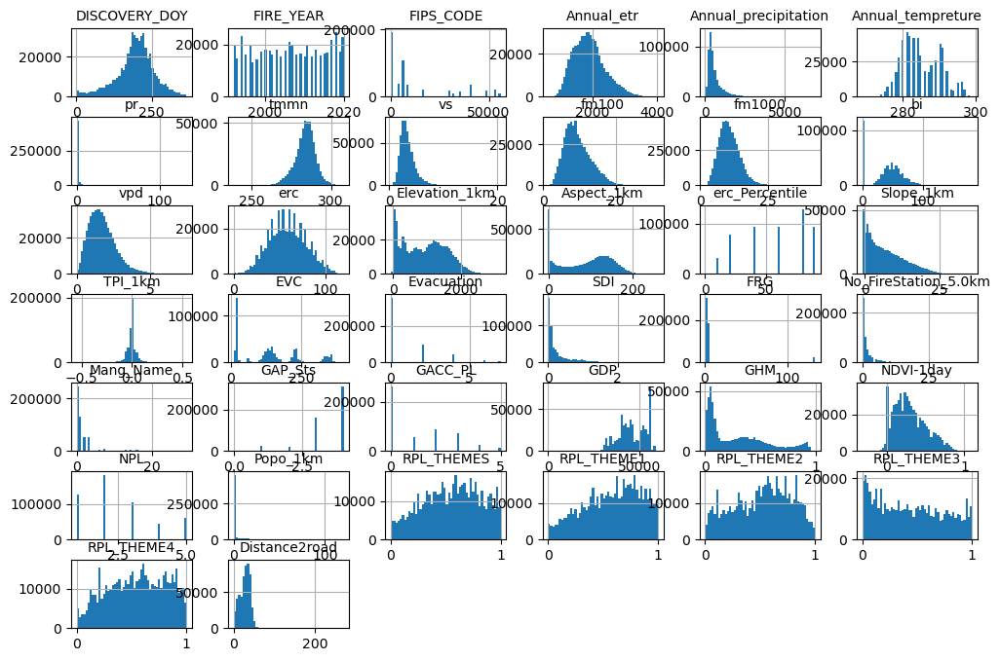

Clustering Algorithms#
In this tutorial, we will explore some common clustering methods, including K-Means clustering, DBSCAN, and Gaussian Mixture Models.
We’ll apply these clustering algorithms to a data set of aerosol observations from a laboratory study. Aerosols are any types of small particulate matter that is suspended in the atmosphere. They play an important in the climate because they directly scatter and absorb sunlight. Aerosols also play an important role in cloud formation, since ice or liquid droplets that form in the atmosphere typically require some type of solid aerosol particle to act as an ice nuclei or cloud condensation nuclei. Finally, aerosols are important for air quality; small particulate matter <2.5 um (PM2.5) has significant impacts on human health.
The aerosol observations that we will look at here comes from a specialized type of instrument called the Single Particle Soot Photometer (SP2), which can be used to measure aerosols that strongly absorb sunlight, such as black carbon and iron oxide aerosols from combustion sources. It is used in airborne and ground-based field studies to measure the atmospheric mass loadings of absorbing aerosols.
The data set includes 7 different classes of aerosols that can be detected by the SP2.
These data sets come from the study:
[1] K.D. Lamb. “Classification of iron oxide aerosols with a single particle soot photometer using supervised machine learning.” Atmospheric Measurement Techniques, 12, 3885‑3906, 2019.
import pandas as pd
import os
import numpy as np
import matplotlib.pyplot as plt
Load the data#
path = "/Users/karalamb/Columbia/Projects/SP2"
The data is already split in training, validation, and test data sets. For this analysis, we will just look at the training data set.
X_train = np.load(os.path.join(path,"Lab_X_train.npy"))
y_train = np.load(os.path.join(path,"Lab_y_train.npy"))
print(X_train.shape)
(140082, 400, 4)
The first dimension in X_train is the sample number, and each observed aerosol has a 400 point time series from 4 different detectors. We can visualize an example of the signal associated with a single aerosol particle here:
plt.plo
---------------------------------------------------------------------------
AttributeError Traceback (most recent call last)
Cell In[5], line 1
----> 1 plt.plo
AttributeError: module 'matplotlib.pyplot' has no attribute 'plo'
print(np.unique(y_train))
[0. 1. 2. 3. 4. 5. 6.]
The data set includes 7 different classes of aerosols.
path = "/Users/karalamb/Columbia/Projects/ML4Climate2025/ML4Climate2025/lectures_ML/SupervisedML"
data = pd.read_csv(os.path.join(path,"FPA_FOD_west_cleaned.csv"))
data.head()
| DISCOVERY_DOY | FIRE_YEAR | STATE | FIPS_CODE | NWCG_GENERAL_CAUSE | Annual_etr | Annual_precipitation | Annual_tempreture | pr | tmmn | ... | GHM | NDVI-1day | NPL | Popo_1km | RPL_THEMES | RPL_THEME1 | RPL_THEME2 | RPL_THEME3 | RPL_THEME4 | Distance2road | |
|---|---|---|---|---|---|---|---|---|---|---|---|---|---|---|---|---|---|---|---|---|---|
| 0 | 1 | 2007 | CA | 6053.0 | Misuse of fire by a minor | 1625 | 257 | 286.0 | 0.0 | 276.500000 | ... | 0.42 | 0.00 | 1.0 | 1.1494 | 0.055 | 0.027 | 0.245 | 0.039 | 0.203 | 43.0 |
| 1 | 1 | 2007 | CA | 6019.0 | Arson/incendiarism | 1819 | 383 | 290.0 | 0.0 | 273.200012 | ... | 0.35 | 0.50 | 1.0 | 0.1652 | 0.525 | 0.719 | 0.499 | 0.302 | 0.405 | 40.2 |
| 2 | 1 | 2007 | CA | 6089.0 | Misuse of fire by a minor | 2293 | 985 | 290.0 | 0.0 | 275.100006 | ... | 0.16 | 0.42 | 1.0 | 0.0504 | 0.476 | 0.635 | 0.516 | 0.002 | 0.581 | 43.8 |
| 3 | 1 | 2007 | CA | 6089.0 | Misuse of fire by a minor | 2293 | 985 | 290.0 | 0.0 | 275.100006 | ... | 0.16 | 0.42 | 1.0 | 0.0504 | 0.476 | 0.635 | 0.516 | 0.002 | 0.581 | 43.8 |
| 4 | 1 | 2007 | CA | 6079.0 | Debris and open burning | 2423 | 102 | 289.0 | 0.0 | 271.299988 | ... | 0.18 | 0.16 | 1.0 | 0.0718 | 0.295 | 0.309 | 0.321 | 0.105 | 0.313 | 41.0 |
5 rows × 40 columns
data.columns
Index(['DISCOVERY_DOY', 'FIRE_YEAR', 'STATE', 'FIPS_CODE',
'NWCG_GENERAL_CAUSE', 'Annual_etr', 'Annual_precipitation',
'Annual_tempreture', 'pr', 'tmmn', 'vs', 'fm100', 'fm1000', 'bi', 'vpd',
'erc', 'Elevation_1km', 'Aspect_1km', 'erc_Percentile', 'Slope_1km',
'TPI_1km', 'EVC', 'Evacuation', 'SDI', 'FRG', 'No_FireStation_5.0km',
'Mang_Name', 'GAP_Sts', 'GACC_PL', 'GDP', 'GHM', 'NDVI-1day', 'NPL',
'Popo_1km', 'RPL_THEMES', 'RPL_THEME1', 'RPL_THEME2', 'RPL_THEME3',
'RPL_THEME4', 'Distance2road'],
dtype='object')
firecauses = data['NWCG_GENERAL_CAUSE'].value_counts()
print(firecauses)
NWCG_GENERAL_CAUSE
Natural 168349
Missing data/not specified/undetermined 150427
Equipment and vehicle use 48994
Debris and open burning 40516
Recreation and ceremony 38665
Arson/incendiarism 28090
Smoking 13547
Misuse of fire by a minor 11523
Power generation/transmission/distribution 6469
Fireworks 6373
Railroad operations and maintenance 3074
Other causes 2068
Firearms and explosives use 1594
Name: count, dtype: int64
## Deal with some bad data
data.loc[data["GHM"]<0.0,"GHM"] = np.nan
data.loc[data["SDI"]<0.0,"SDI"] = np.nan
data['FRG'] = data['FRG'].replace(-9999,np.nan)
data["RPL_THEMES"] = data["RPL_THEMES"].replace(-999.0,np.nan)
data["RPL_THEME1"] = data["RPL_THEME1"].replace(-999.0,np.nan)
data["RPL_THEME2"] = data["RPL_THEME2"].replace(-999.0,np.nan)
data["RPL_THEME3"] = data["RPL_THEME3"].replace(-999.0,np.nan)
data["RPL_THEME4"] = data["RPL_THEME4"].replace(-999.0,np.nan)
import matplotlib.pyplot as plt
# extra code – the next 5 lines define the default font sizes
plt.rc('font', size=10)
plt.rc('axes', labelsize=10, titlesize=10)
plt.rc('legend', fontsize=10)
plt.rc('xtick', labelsize=10)
plt.rc('ytick', labelsize=10)
data.hist(bins=50, figsize=(12, 8))
#save_fig("attribute_histogram_plots") # extra code
plt.show()

data_cleaned = data.dropna().reset_index(drop=True)
Separate out the fires with no known causes#
data_sorted = data_cleaned.iloc[np.where(data_cleaned['NWCG_GENERAL_CAUSE'] == 'Missing data/not specified/undetermined')[0].tolist() +
np.where(data_cleaned['NWCG_GENERAL_CAUSE'] != 'Missing data/not specified/undetermined')[0].tolist()].reset_index(drop=True).copy()
data_sorted
| DISCOVERY_DOY | FIRE_YEAR | STATE | FIPS_CODE | NWCG_GENERAL_CAUSE | Annual_etr | Annual_precipitation | Annual_tempreture | pr | tmmn | ... | GHM | NDVI-1day | NPL | Popo_1km | RPL_THEMES | RPL_THEME1 | RPL_THEME2 | RPL_THEME3 | RPL_THEME4 | Distance2road | |
|---|---|---|---|---|---|---|---|---|---|---|---|---|---|---|---|---|---|---|---|---|---|
| 0 | 1 | 2007 | CA | 6065.0 | Missing data/not specified/undetermined | 2359 | 100 | 292.0 | 0.0 | 277.799988 | ... | 0.84 | 0.22 | 1.0 | 5.2191 | 0.261 | 0.167 | 0.424 | 0.427 | 0.256 | 38.5 |
| 1 | 1 | 2007 | CA | 6065.0 | Missing data/not specified/undetermined | 2452 | 110 | 291.0 | 0.0 | 275.899994 | ... | 0.61 | 0.17 | 1.0 | 1.3687 | 0.927 | 0.969 | 0.940 | 0.846 | 0.607 | 38.3 |
| 2 | 1 | 2007 | AZ | 0.0 | Missing data/not specified/undetermined | 3146 | 135 | 292.0 | 0.0 | 273.100006 | ... | 0.04 | 0.11 | 1.0 | 0.0000 | 0.504 | 0.829 | 0.535 | 0.046 | 0.394 | 36.2 |
| 3 | 1 | 2007 | CA | 6065.0 | Missing data/not specified/undetermined | 3546 | 20 | 297.0 | 0.0 | 277.100006 | ... | 0.92 | 0.04 | 1.0 | 8.1135 | 0.611 | 0.498 | 0.653 | 0.594 | 0.688 | 37.5 |
| 4 | 1 | 2007 | CA | 6065.0 | Missing data/not specified/undetermined | 2486 | 92 | 292.0 | 0.0 | 277.799988 | ... | 0.88 | 0.18 | 1.0 | 13.7651 | 0.939 | 0.833 | 0.879 | 0.822 | 0.875 | 38.8 |
| ... | ... | ... | ... | ... | ... | ... | ... | ... | ... | ... | ... | ... | ... | ... | ... | ... | ... | ... | ... | ... | ... |
| 518654 | 364 | 2003 | CO | 0.0 | Arson/incendiarism | 2222 | 390 | 284.0 | 0.0 | 263.500000 | ... | 0.08 | 0.29 | 1.0 | 0.0007 | 0.464 | 0.560 | 0.089 | 0.688 | 0.695 | 16.8 |
| 518655 | 364 | 2003 | CO | 8043.0 | Arson/incendiarism | 1891 | 636 | 280.0 | 0.0 | 261.700012 | ... | 0.06 | 0.37 | 1.0 | 0.0003 | 0.464 | 0.560 | 0.089 | 0.688 | 0.695 | 16.8 |
| 518656 | 365 | 2003 | CA | 6025.0 | Recreation and ceremony | 2846 | 63 | 298.0 | 0.0 | 286.500000 | ... | 0.19 | -0.00 | 1.0 | 0.0000 | 0.715 | 0.914 | 0.545 | 0.500 | 0.421 | 8.7 |
| 518657 | 365 | 2003 | CA | 0.0 | Debris and open burning | 1805 | 994 | 287.0 | 0.0 | 274.100006 | ... | 0.39 | 0.02 | 1.0 | 0.4738 | 0.216 | 0.509 | 0.207 | 0.008 | 0.151 | 33.6 |
| 518658 | 365 | 2003 | CA | 6065.0 | Equipment and vehicle use | 2048 | 318 | 292.0 | 0.0 | 280.399994 | ... | 0.81 | 0.11 | 1.0 | 1.1717 | 0.636 | 0.785 | 0.567 | 0.453 | 0.377 | 6.1 |
518659 rows × 40 columns
data_unknown = data_sorted.loc[data_sorted["NWCG_GENERAL_CAUSE"] == "Missing data/not specified/undetermined"].reset_index(drop=True).copy()
data_known = data_sorted.loc[data_sorted["NWCG_GENERAL_CAUSE"] != "Missing data/not specified/undetermined"].reset_index(drop=True).copy()
data_known["IsNatural"] = (data_known["NWCG_GENERAL_CAUSE"] == "Natural").astype(int)
Preprocess the data sets#
from sklearn.preprocessing import OneHotEncoder, OrdinalEncoder
from sklearn.preprocessing import StandardScaler
from sklearn.pipeline import make_pipeline
from sklearn.compose import ColumnTransformer
causes = data_known[['NWCG_GENERAL_CAUSE']]
isnatural = data_known[["IsNatural"]]
features = data_known.copy().drop(["NWCG_GENERAL_CAUSE","IsNatural"],axis=1)
features_unknown = data_unknown.copy().drop(["NWCG_GENERAL_CAUSE"],axis=1)
y_binary = isnatural.to_numpy()
classnames_binary = ["Anthropogenic","Natural"]
ordenc = OrdinalEncoder()
y_multiclass = ordenc.fit_transform(causes)
classnames_multi = ordenc.categories_[0]
print(classnames_multi)
['Arson/incendiarism' 'Debris and open burning'
'Equipment and vehicle use' 'Firearms and explosives use' 'Fireworks'
'Misuse of fire by a minor' 'Natural' 'Other causes'
'Power generation/transmission/distribution'
'Railroad operations and maintenance' 'Recreation and ceremony' 'Smoking']
categorical_cols = ["STATE"]
numerical_cols = ['DISCOVERY_DOY', 'FIRE_YEAR', 'FIPS_CODE', 'Annual_etr', 'Annual_precipitation','Annual_tempreture',
'pr', 'tmmn', 'vs', 'fm100', 'fm1000', 'bi', 'vpd', 'erc', 'Elevation_1km', 'Aspect_1km', 'erc_Percentile',
'Slope_1km','TPI_1km', 'EVC', 'Evacuation', 'SDI', 'FRG', 'No_FireStation_5.0km','Mang_Name', 'GAP_Sts',
'GACC_PL', 'GDP', 'GHM', 'NDVI-1day', 'NPL','Popo_1km', 'RPL_THEMES', 'RPL_THEME1', 'RPL_THEME2', 'RPL_THEME3',
'RPL_THEME4', 'Distance2road']
cat_pipeline = make_pipeline(OrdinalEncoder(),StandardScaler())
num_pipeline = make_pipeline(StandardScaler())
preprocessor = ColumnTransformer([
("n",num_pipeline,numerical_cols),
("c",cat_pipeline,categorical_cols)])
X_known = preprocessor.fit_transform(features)
X_unknown = preprocessor.transform(features_unknown)
Training, validation, and test split#
As before, we will split our data into training, validation, and test data sets. This step is not strictly necessary for unsupervised learning, but still good practice.
from sklearn.model_selection import train_test_split
z_known = np.arange(0,X_known.shape[0])
X_train, X_val_test, z_train, z_val_test = train_test_split(X_known,z_known,test_size = 0.2, random_state = 42)
X_val, X_test, z_val, z_test = train_test_split(X_val_test, z_val_test ,test_size = 0.5, random_state = 42)
y_multiclass_train = y_multiclass[z_train].ravel()
y_multiclass_test = y_multiclass[z_test].ravel()
y_multiclass_val = y_multiclass[z_val].ravel()
y_binary_train = y_binary[z_train].ravel()
y_binary_test = y_binary[z_test].ravel()
y_binary_val = y_binary[z_val].ravel()